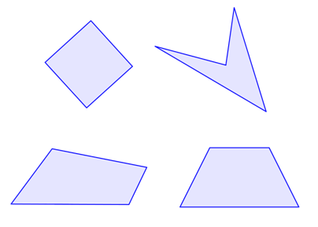
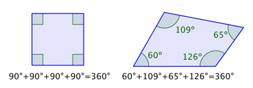
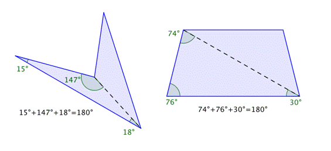
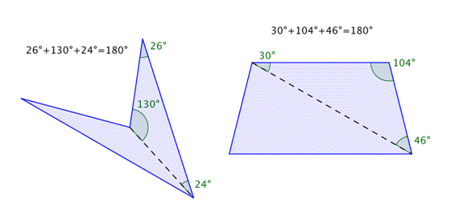
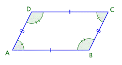
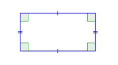
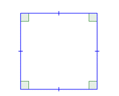
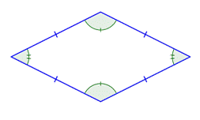
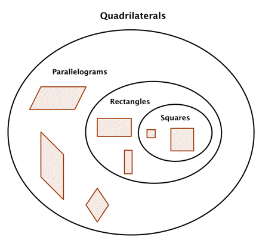

Quadrilaterals:
Quadrilaterals are a special type of polygon. As with triangles and other
polygons, quadrilaterals have special properties and can be classified by
characteristics of their angles and sides.
Understanding the properties of different quadrilaterals can help you in solving
problems that involve this type of polygon.
Defining a Quadrilateral:
Picking apart the name “quadrilateral” helps you understand what it refers to.
The prefix “quad-” means “four,” and “lateral” is derived from the Latin word
for “side.” So a quadrilateral is a four-sided polygon.
Since it is a polygon, you know that it is a two-dimensional figure made up of
straight sides. A quadrilateral also has four angles formed by its four sides.
Below are some examples of quadrilaterals.

Interior Angles of a Quadrilateral:
The sum of the interior angles of any quadrilateral is 360°.

You could draw many quadrilaterals such as these and carefully measure the four
angles. You would find that for every quadrilateral, the sum of the interior
angles will always be 360°.
You can also use your knowledge of triangles as a way to understand why the sum
of the interior angles of any quadrilateral is 360°. Any quadrilateral can be
divided into two triangles as shown in the images below.
In the first image, the quadrilaterals have each been divided into two
triangles. The angle measurements of one triangle are shown for each.

These measurements add up to 180º. Now look at the measurements for the other
triangles—they also add up to 180º!

Since the sum of the interior angles of any triangle is 180° and there are two
triangles in a quadrilateral, the sum of the angles for each quadrilateral is
360°.
Specific Types of Quadrilaterals:
Let’s start by examining the group of quadrilaterals that have two pairs of
parallel sides. These quadrilaterals are called parallelograms They take a
variety of shapes, but one classic example is shown below.

Imagine extending the pairs of opposite sides. They would never intersect
because they are parallel. Notice, also, that the opposite angles of a
parallelogram are congruent, as are the opposite sides.
The parallel sides are also the same length: and . These relationships are true
for all parallelograms.
There are two special cases of parallelograms that will be familiar to you from
your earliest experiences with geometric shapes. The first special case is
called a rectangle.

By definition, a rectangle is a parallelogram because its pairs of opposite
sides are parallel. A rectangle also has the special characteristic that all of
its angles are right angles; all four of its angles are congruent.
The other special case of a parallelogram is a special type of rectangle, a
square. A square is one of the most basic geometric shapes. It is a special case
of a parallelogram that has four congruent sides and four right angles.

A square is also a rectangle because it has two sets of parallel sides and four
right angles. A square is also a parallelogram because its opposite sides are
parallel.
So, a square can be classified in any of these three ways, with “parallelogram”
being the least specific description and “square,” the most descriptive.
Another quadrilateral that you might see is called a rhombus. All four sides of
a rhombus are congruent. Its properties include that each pair of opposite sides
is parallel, also making it a parallelogram.

In summary, all squares are rectangles, but not all rectangles are squares. All
rectangles are parallelograms, but not all parallelograms are rectangles. And
all of these shapes are quadrilaterals.
The diagram below illustrates the relationship between the different types of
quadrilaterals.
